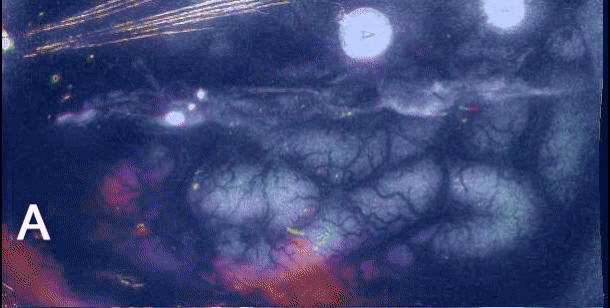

Q1. Sobre o potencial alastrante de Leão na enxaqueca:
Pergunta central
Cérebro hiperexcitável e Leão
O que o potencial alastrante de Leão faz — e por que não é convulsão?
Hiperexcitabilidade
Não há certeza absoluta sobre todos os detalhes de neurotransmissores da gênese. Há conceitos consagrados: o cérebro do enxaquecoso é hiperexcitável. Qualquer mudança de homeostase pode deflagrar crise.
Gatilhos amplos
Estresse; mudança hormonal menstrual/pré-menstrual; frio; calor; mudança de alimentação; vinho; chocolate — o leque é amplo. “Qualquer coisinha” pode disparar. A resposta ao meio é exagerada.
Leão ≠ convulsão
A resposta gera pequenos potenciais elétricos que se espalham pelo encéfalo. Eletricidade se espalhando e despolarizando neurônio não significa crise convulsiva. Esses potenciais não excitam como o potencial epileptiforme verdadeiro.
Nome de prova: potencial alastrante de Leão (epônimo do médico que descreveu). O Leão irrita neurônio (“inflamadinho”), participa da gênese da enxaqueca e, de certa forma, da aura.
Trigêmeo + vasos da base
Com o alastramento, há irritação do nervo trigêmeo (grande sensitivo da face) e comprometimento de grandes vasos da base com receptores sensitivos álgicos.
Por que lateja
Como a dor “pega” vasos da base, a característica é pulsátil/latejante. A imagem mostra a frente de despolarização varrendo o córtex — não é descarga epileptiforme.

Santos E et al. NeuroImage 2014;99:244–255 — CC BY-SA 4.0 · DOI 10.1016/j.neuroimage.2014.05.021 · fonte
A onda de Leão, fora da convulsão
A frente de despolarização anda pelo córtex a poucos mm/min — não é descarga epileptiforme. A onda abre o terreno para a dor latejante, mas não é convulsão.
Quiz
Q2. Por que a dor da enxaqueca tende a ser latejante?